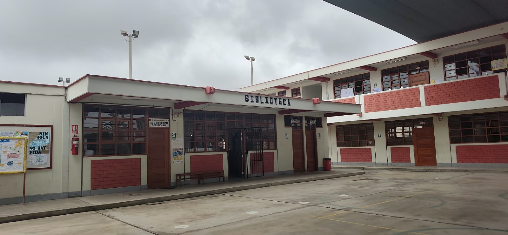
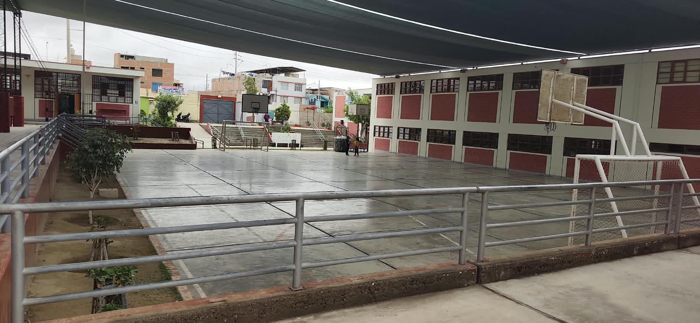
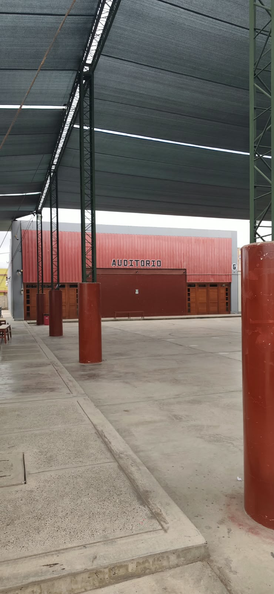
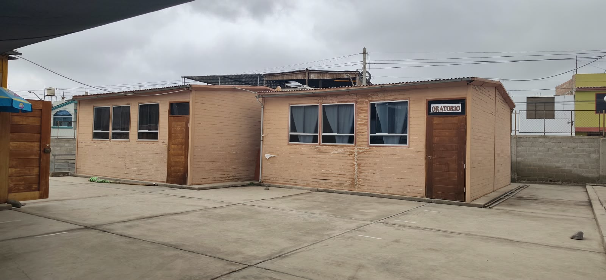
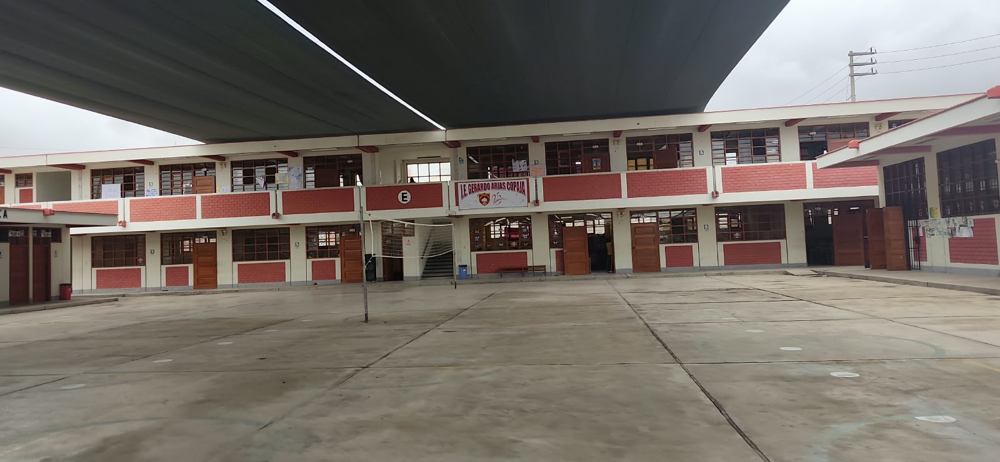
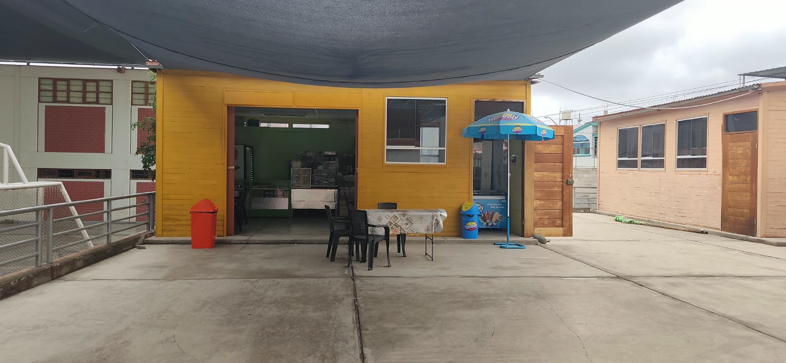

Instalaciones
Infraestructura y Espacios
Ambientes modernos y seguros diseñados para potenciar el aprendizaje, el deporte y la convivencia escolar.
Recorrido por Nuestros Espacios
Conoce los ambientes donde se desarrollan las actividades de nuestros estudiantes






Compromiso con el Mantenimiento
Nuestra institución realiza de manera constante trabajos de mantenimiento preventivo, limpieza y optimización tecnológica gracias a la gestión estatal y el apoyo de la comunidad de padres de familia.